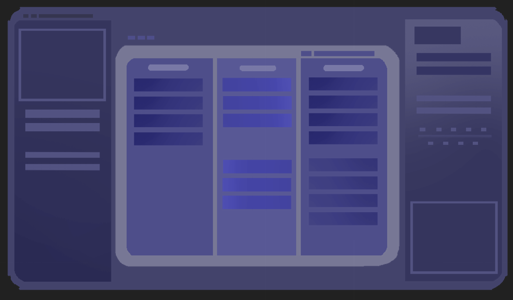
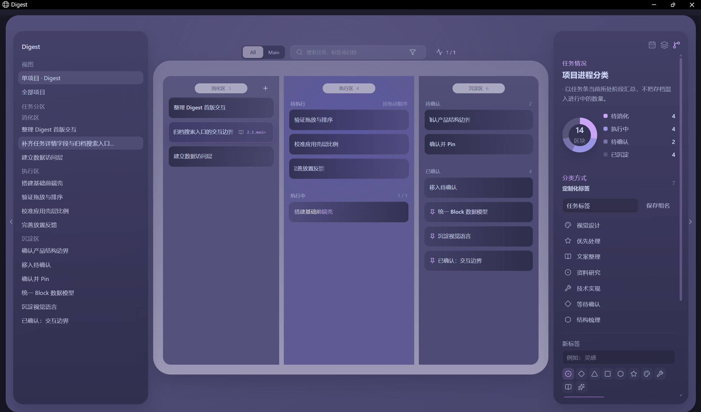

先找具体的不顺手
先说清是哪个场景不顺手，再决定需要怎样的工具。
01 / 04AI × EVERYDAY LIFE
从一句日常对话，到一次恰好的安排。
让家庭助手在生活里，慢慢学会体贴。
02 / 04A SPACE OF YOUR OWN
想法、日记、待办，各有一个舒服的位置。
把工作空间的决定权，交回自己手里。
03 / 04THOUGHTS INTO MOTION
消化、执行、沉淀。
让一件事的来处、进展和结果，都看得见。


草图实现04 / 04A LITTLE CONTINUITY
回看发生过的事，留下下一步，找回曾经的对话。
也让这个入口，长成自己喜欢的样子。
THE ONGOING EXPLORATIONS
一些从自己身边长出来的 AI 与工具实验。
AN AI WITH CONTINUITY
围绕对话消化、记忆召回与上下文组织持续探索。基于开源项目定制，从 Reasonix 到 DSH，寻找更贴近个人需要的实现方式。
HOW I MAKE THINGS
先说清是哪个场景不顺手，再决定需要怎样的工具。
我定需求与方向，和 AI 一起把构思做成能试的原型。
在真实使用里找到负担，留下有用的，让作品继续长。
A LITTLE ABOUT ME
ALIN / 阿琳我是阿琳，关注 AI 怎样进入真实生活，也喜欢让工具顺着人的思路工作。从需求与体验出发，借助 AI 做出可以试的原型，再在使用里慢慢改。
如果你也有一个还没成形的想法，欢迎来聊聊。